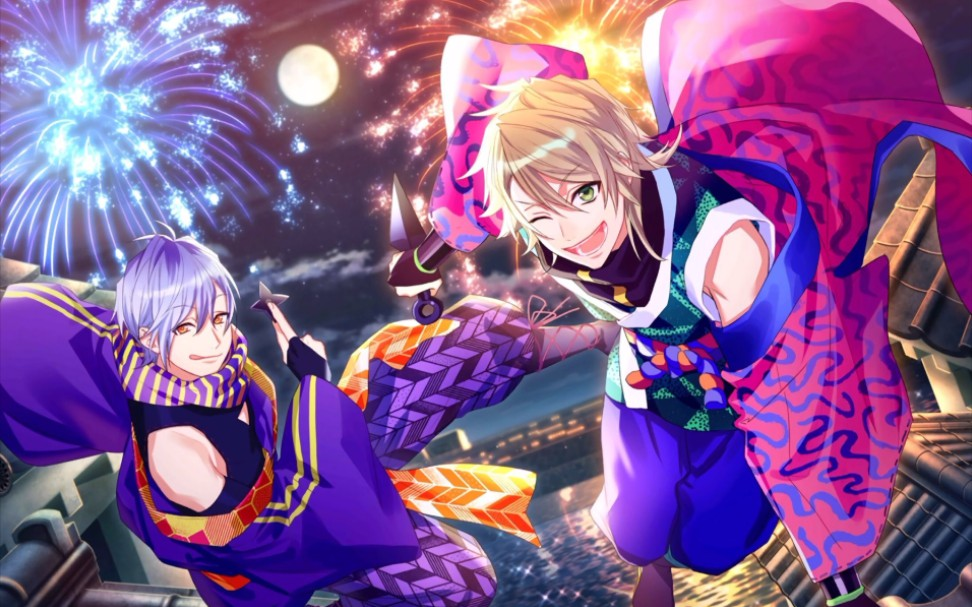
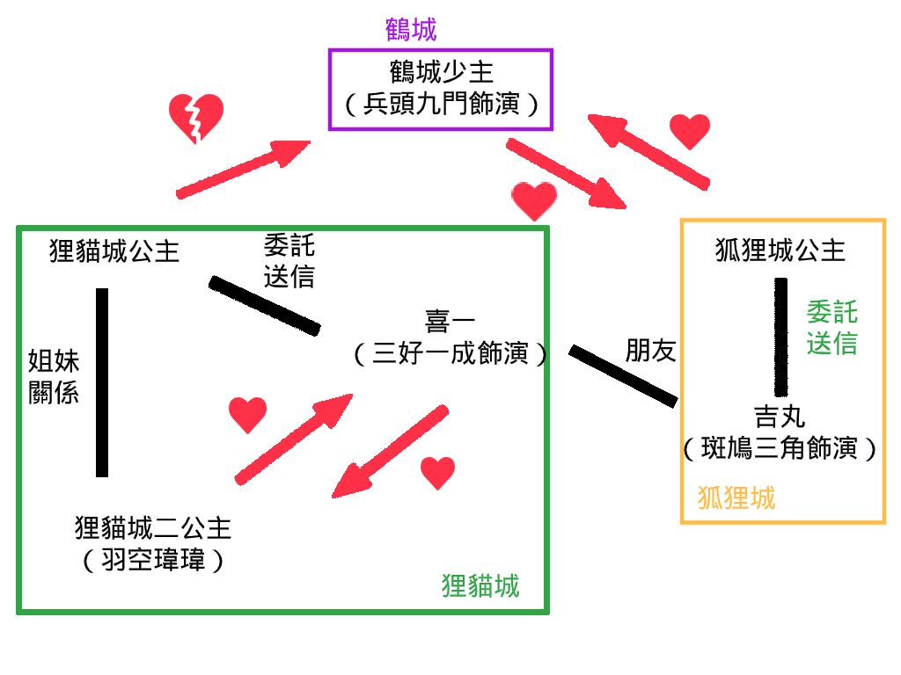

SHI★NO★BI珍道中 公演劇情
-
主演：喜一(三好一成飾) 準主演：吉丸(斑鳩三角飾)
-
劇情
第一次出任務的伊賀菜鳥忍者喜一，受到狸貓城公主委託，要將情書送交給鶴城的年輕少主；另一方面，遲遲無法出人頭地的甲賀中忍吉丸，受到狐狸城公主委託，為了將情書送交給鶴城的年輕少主，而從狐狸城出發。
兩位在途中偶然相遇，雖然甲賀和伊賀忍者彼此水火不容，但他們覺得相遇也是有緣，所以兩人一起喝酒狂歡變成好友，但卻不小心把彼此的信件拿錯，於是造成一連串的事件發生，他們各處的國家還差點發生戰爭打起來，在兩人攜手合作下，避免了戰爭，讓事件成功落幕。
-
角色後台故事設定補充：鶴城少主和狐狸城公主在一起後，喜一送來安慰禮百合花（花語：順利、祝福、高貴、心想事成之意。），而未來狸貓城公主似乎可以跟喜一譜出戀曲（？）

私設世界觀（忍者 X 公主戀愛向）
-
喜一（三好一成）
狸貓城二公主（羽空瑋瑋）
-
私設世界觀是接著公演劇情
因為最後鶴城少主和狐狸城公主在一起，導致狸貓城公主失戀，為了安慰她，身為妹妹的二公主和忍者喜一一起去摘花安慰大公主，兩人日久生情，成為一對戀人。
互動
-
瑋瑋視角
瑋瑋一開始只把喜一當成一起幫姐姐打起精神的幫手，但在一次次的摘花過程中產生情愫，最後愛上了他。
-
喜一視角
一開始是抱著有些愧疚的心情，在大公主門外遇到了瑋瑋，跟她一起四處摘花想幫大公主打氣，本來是很佩服瑋瑋對自己姐姐的親情心意，但後來轉為欣賞和注意，最後被打動而愛上了她。